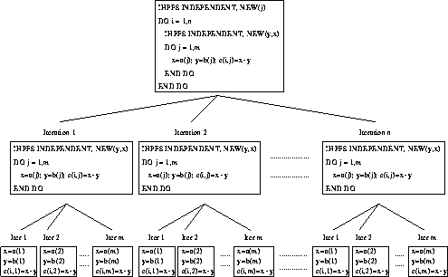

Consider,
DO i = 1, n
DO j = 1, m
x = A(j)
y = B(j)
C(i,j) = x+y
END DO
END DO
with a nested loop such as this, it is the inner loops that must be examined first. Inspection of the j loop reveals that if copies were made of x and y for each iteration the loop would be INDEPENDENT. In order to parallelise, the directive:
!HPF$ INDEPENDENT, NEW (x,y)
should prefix the inner loop.
Attention can now turn to the outermost loop. We could perform all the i iterations at the same time if there was a separate DO j loop for each iteration. Specifying j to be a NEW variable would do exactly this, viz:
!HPF$ INDEPENDENT, NEW (j)
DO i = 1, n
!HPF$ INDEPENDENT, NEW (x,y)
DO j = 1, m
x = A(j)
y = B(j)
C(i,j) = x+y
END DO
END DO
After the loop x, y and j will have an undetermined value so cannot be used before being assigned a new value. (In regular Fortran they could be.)
Looking at the outermost leaves of Figure 39 will illustrate what can be performed in parallel. It can be seen that all iterations can be performed independently. There is no interaction between any iterations.

Figure 39: Visualisation of Double Nested Independent New Loop
Now try this question